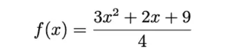

If you have had a bad experience with math, you may already be discouraged about your ability to learn it. However, since you’re reading this and I’m writing it, let’s assume we both have some interest in the topic, and from that solid basis, let us both be encouraged.
Alright, we both have an interest, and we plan to nurture that with encouragement. But we’ll need a few more things to be successful. In the same way, you can be interested in traveling to New York, and I can encourage you to go, so far so good. But a true friend would loan you his phone (to provide directions) and his car (a way to get there).
Fortunately, in the case of the directions that I’m using to learn math and the vehicle I’m using to get there, I can share them with you without losing the use of them myself. Let’s begin our journey, then, by understanding a bit more about the subjects we’ll tackle in this article.
What We Will Discuss¶
Before you spend your time reading the whole article, I thought you might enjoy knowing a bit about whether that investment will be valuable. So with that, here’s a brief outline of the road ahead. The first section below, Go Cheap or Go Home, is the longest. It covers many resources you might consider for your self-teaching journey. The remaining sections constitute part two of the article. In part two, we’ll examine several core ideas about the mindset and attitudes that can lead you to be successful.
Go Cheap or Go Home - This section will be about learning as much math as possible for free or for very little money.
Learning Math at Any Age - Like many other sections in this article, this one will focus on overcoming one of the myths we sometimes tell ourselves about whether we can learn math.
Learning Math At Any Anything - In this section, we want to discuss other forms of “-ism” that may hold you back besides ageism.
But I’m Not Good At Math - If you’ve ever said this – out loud or to yourself – I’ll share all the tools I know for banishing this idea.
What Does This Have to Do WIth Python? - Since this is a Python blog, let’s see why learning math might not be as “off-topic” as it appears at first glance.
What You Need to Learn Anything - This is a general approach to learning anything, all of which will apply to learning math.
How Learning Math Is Different from Learning Other Things - This one key difference may mean that self-teaching is the best way to do it.
Go Cheap or Go Home¶
Since many of our later sections will be devoted to more general ideas about how to learn math, I thought it would be helpful to share many of the free and low-cost resources I’m using. After all, one of the core benefits of learning math on your own is that you can save a ton of money on the cost of traditional education.
One thing I won’t focus on in this section is where to begin or how much time to spend. My own current practice is to spend an hour and a half per day on mathematics, and I try to do this every day. I generally break this up into three thirty-minute blocks to work in a break.
Choose a level that you feel comfortable with as a starting point. The highest course I took in high school and college was pre-calculus. However, you may need to start earlier (perhaps with geometry or algebra). You may be able to start later (with differential equations or advanced analysis).
Taking Notes and Working Problems¶
Make sure you have lots of paper on which to take notes and calculate. I was able to scare up a three-hole D-ring binder I had hanging around along with a paper punch, so I started by using the backs of pads that I’d filled up while taking notes at work. About a week ago, I decided to treat myself to the extravagant purchase of 300 sheets of reinforced, pre-punched graph paper. Here’s an (affiliate) link if you want to get some.
I don’t draw a lot of graphs, but writing on the front side of pages with nothing on the back does make me feel like a millionaire.
I don’t get out much.
Free Online Math Courses and Resources¶
There are two outstanding free resources that I’ll mention here since I’m relying on both heavily. Both have great Calculus offerings, but they also cover many other math subjects at various levels.
Kahn Academy - Kahn Academy began its life as some video tutorials that Sal Kahn created for some of his relatives and hosted on YouTube. The videos are typically relatively short, and the courses feature many practice problems and quizzes with a “gamified” feel. (Right answers ring a bell, you level up when you pass or do well, etc.). Kahn Academy is a great resource with lots of practice problems, but since the videos are short, some steps are occasionally glossed over and not made explicit. I don’t want to overstate the problem, as this website deserves credit for my return to math as an adult, but it does mean that you should supplement Kahn Academy with another resource.
Professor Leonard - The long-form videos on Professor Leonard’s YouTube channel are an excellent complement to the presentations on Kahn Academy. Most of these videos are recordings of Professor Leonard’s classroom lectures. This format lends itself to much more detailed explanations and fully worked practice problems in class than the Kahn Academy short videos. One approach is to use these where you find yourself “stuck” on the Kahn Academy subject matter.
Paul’s Math Notes - There are many other online courses, both free and paid, that one can use, but as with programming, just watching online videos and taking good notes will only get you so far. After you’ve identified one or two good course resources, the real benefit comes from having plenty of practice problems available to reinforce what you’ve learned. One free resource for tons of great practice problems with solutions is Paul’s Math Notes.
Low-Cost Books for Mathematics Study¶
As if the high cost of tuition weren’t enough to frighten you out of parenthood these days, once you get past tuition, you have to contend with the high cost of university textbooks. For university classes, you often have to use whatever recent edition of a book your teacher wants to use, which can get pretty pricey.
When you teach yourself, in contrast, you have more choices. For example, the fourteenth edition of Thomas’ Calculus, purchased new, will set you back \(149.99 as of today on Amazon. Now I love a shiny, brand new book as much or more than the next guy (ask my wife, who complains about the number of volumes I keep in the house). However, three years ago, I picked up a used copy in excellent condition of the ninth edition of Thomas and Finney's Calculus text for the whopping sum of \)8.52. That’s less than I paid for the loose-leaf paper. I admit I haven’t needed it much given the online resources I’ve found since, but it has been useful if I need to quickly find a formal explanation of the theory behind something I’m studying.
Calculators and Software¶
As it is with textbooks, so it is with calculators: for a high school or college course, the “recommended model” will cost you more. For the CLEP Calculus exam that I’m planning to take in the Spring, there’s an on-screen calculator based on the Texas Instruments TI-84 Plus CE (which I’m tempted to buy just to get familiar with it even though there are free versions available with the practice test).
Many reviewers of this product have noted (sometimes rather amusingly) that the cost relative to the value here results from the purchaser being “over a barrel” since it’s a required product for many students.
I can certainly sympathize with this position. For my purposes, I have all the calculators I need for my online math courses. I already know how to use them. They are a Python terminal with the “math” package, which makes simple calculations and things like trigonometric equations a breeze. For any easy equation plotting or even checking that my “math homework” solutions are correct, I can use the SageMath terminal, which is equally easy. For example, I can easily plot this function in Sage:

sage: f(x) = (3*x^2 + 2*x + 9)/4
sage: plot(f)
This pops up a new window with the desired plot.

As much as I love SageMath, I should also mention a favorite tool of many other math students, WolframAlpha. To give you a taste of the many goodies available there, here’s the same function above as it appears if you enter it on WolframAlpha. If you scroll down, you’ll see you get not only the plot but also many alternate forms, the derivative, the indefinite integral, and the global minimum, all worked out for you.
Wolfram Alpha also includes a problem generator you can use to generate problems on a huge range of different subjects. I have to admit, after taking another look at Wolfram Alpha, I may be much more of a fan now than when I started!
Learning Math At Any Age¶
We begin our section about the mindset and attitudes we need to be successful in math with a topic that is dear to me on a personal level, learning math at any age. This is because I am in the process of a course of self-study that may lead me back to school next year for an undergraduate math degree. I am also sixty-three years old at the time of this writing. I am picking up a course of self-study in Calculus that I started and abandoned three years ago, at the age of sixty.
At first, when I looked around online, I found little support for the idea that you can learn mathematics later in life. At least one thread on Reddit seemed to discourage such an idea actively. As much as I want to dismiss actively discouraging people as a classic tool of the Reddit troll’s trade, let’s see if there’s any sense in which this “thou must be young to take math” might be valid.
Many people learn math because they need to do it. They’re not interested in mastering it for its own sake, but rather, they’re studying it as part of a career in the sciences or another technical field like medicine or economics. In that case, perhaps it makes sense to master this sort of “math as a prerequisite to something else” as early as possible, so you can spend as much time doing that other thing you want to do as you can.
For me, however, this same fact – that math is foundational to so many other disciplines – is what makes it worth studying if one has the time and inclination to do so. For example, although I’m currently only in the equivalent of first-semester Calculus, I’ve already been learning bits of elementary physics and economics in the sections on applications. So whatever sciences you fancy knowing a bit more about, math is a gateway drug that won’t land you in legal trouble.
Learn Math At Any, Well, Anything¶
I brought up the ageism issue first because it’s the form of discrimination to which I’m most sensitive, though it’s a fair point that I’ve enjoyed many other privileges in life. I’m white and male, so the deck was not stacked against me from the beginning in that respect. Whatever the evils of ageism, hearing “you can’t” when you’re old enough to fight back is very different from hearing it when you’re five or six and continuing to hear it throughout your school years.
Whoever you are, and wherever you’re starting from, I hope I can convince you that the voices telling you that you can’t are completely unworthy of your respect and attention. Being told you can’t is irrelevant. People may have thought a black woman wouldn’t work for NASA until a woman named Katherine Johnson and others did just that. During her time there, Johnson calculated the orbit for John Glenn’s space flight, worked out the trajectory of Apolo 11 and was part of the team that brought the Apollo 13 crew back safely. “You learn if you want to learn,” she later said.
I’ll bet she heard “you can’t” more than once along the way. When told by her mom that she was going to Virginia at a particularly tough time for black women and men there, she replied, “Tell them I’m coming.” The YouTube video produced after she received the Presidential medal of freedom is definitely worth watching.
There is one person, however, whose opinion of you can have a substantial negative impact on your success, and dealing with that person is the subject of our next section.
“But I’m Not Good At Math”¶
Over the last several years, a Psychologist named Carol Dweck has researched and popularized the idea of a “growth mindset.” In contrast with a “fixed mindset,” students with a growth mindset see challenges as opportunities to improve. Far from being discouraged by complex problems, they realize that their abilities will grow as a result of challenges. On the other hand, people with a fixed mindset view of their abilities see a short-term failure as a reflection of their overall ability. Since, in their view, their abilities are fixed, that’s a permanent reflection on them.
When I was in school, especially college and graduate school, I fiercely protected my grade point average and avoided any classes I thought would bring it down. (As an undergraduate, at least, this was exacerbated by other issues I had going on at the time that I later took care of).
Applying a growth mindset as a rational response to the fixed-mindset idea that “I’m not good at math” can take one of the following forms. Pick the versions that work for you, or use all of them:
No, I’m not good at math now, but with enough practice and study over a long enough time, I can become much better than I am right now.
I’ve had some challenges with math in the past because of some problems in school, so I fell behind. Self-teaching will let me find the resources that fit and take this at my own pace so I can brush up on my skills.
Saying “I’m not good in math” is like saying “I’m not good at speaking Chinese.” If I grew up in China, I could speak Chinese just fine, even as a kid, because I’d be exposed to it. Sure, learning complex math takes more effort than acquiring one’s native language, but if I expose myself to enough math (classes, working problems, etc.), I can improve.
Saying “I’m not good in math” doesn’t make sense in the same way that someone whose adult height was four feet, ten inches could reasonably say, “I’m not tall.” Being “good in math” is not some fixed quantity of talent you’re genetically hardwired to have. It’s a skill that you can master through systematic effort.
I’ve saved my personal favorite for last. “Of course, I’m not good at math. That’s why I’m studying it!”
By the way, if you live in the United States as I do, countries where the students score significantly higher than us in math, according to the Pew Research Center, include Malta, Slovenia, and Belgium. So don’t feel bad if your math isn’t first-rate. At the same time, that’s even more incentive to improve your math skills. We can’t let the Maltese beat us! Malta’s an island, for Pete’s sake.
What Does Math Have To Do With Python?¶
Many folks who read my blog regularly may be pretty surprised to find this math article cropping up on this Python blog. According to your taste in such diversions, this wildflower in a wheatfield is either a beautiful surprise or just a weed.
So does learning math have anything to do with Python? Well, yes and no.
First, let me dispel one myth about programming. This myth may be less prevalent now with the advent of coding boot camps, but at one time, many students felt they had to go through a four-year degree to get a programming job. At the time, most computer science programs at the university level required some college mathematics.
In my view, unless you’re planning to get a four-year degree in computer science, mathematics is not a prerequisite to learning how to program in Python or any other programming language.
On the other hand, Python has long been a favorite of mathematicians and scientists. Developers of third-party libraries supported matrix operations early on, which later brought us NumPy and Pandas, two libraries almost ubiquitous among data scientists today. No, you don’t need much math to code Django websites or AWS Lambda functions. But polishing up my mathematics allows me to do full justice to the Python ecosystem.
What You Need to Learn Anything¶
In our section entitled “But I’m Not Good at Math,” we talked about how having a growth mindset can encourage you to take on demanding challenges based on the belief that your skills can improve with time and practice. I believe this is a crucial component to being able to be successful in a course of study, but it is not the only one.
Here is a list of the top things you’ll need to succeed. These traits are essential whether you’re planning to study mathematics, a musical instrument, or a foreign language.
A growth mindset. We’ve already discussed this at length, so we’ll summarize it as the belief that your learning will improve over time due to sustained effort. Perhaps Henry Ford summed this up best when he said, “Whether you believe you can do a thing or not, you are right.”
Motivation. In Karen Johnson’s words, “you learn if you want to learn.” Not only do you only learn if you want to learn – you also only learn what you want to learn. One thing I’ve discovered, however, is that motivation is not always a fixed quantity.
For example, I stopped drawing at an early age because others seemed so much better at it than me. Years later, however, I briefly took an interest, and because I was an adult and more patient with the process, I was able to produce some drawings that were quite good compared to my earlier efforts. In terms of mathematics, you could not have paid me to study Calculus after an upsetting experience I had with math in high school. Now I spend 90 minutes a day on it.
Time. Depending on what you’re trying to learn, it may take anywhere from a few short weeks to many years. Using Pimsleur language courses, I could achieve a decent conversational level in Spanish after about ninety days, but other languages are much more challenging for an English speaker to learn.
The difficulty of mathematics varies depending on where you’re starting and how much you want to learn. Assuming you don’t have to brush up too many high school skills, the equivalent of a university-level, 3-credit course should take about 158 hours of study. The math-only portion of a Bachelor of Arts in Math amounts to about 1,680 hours, or about three years at ninety minutes per day.
Is that a lot of time? Maybe not – according to Statista, Internet users spend 147 minutes per day on social media. If that’s accurate, you could get yourself the equivalent of a bachelor’s degree in math in three years and still have fifty-seven minutes a day to lollygag on LinkedIn, to be trivial on Twitter and foolish on Facebook.
The Right Inputs. I’m not saying that learning something doesn’t take sustained effort. However, it also requires finding someone with effective teaching methods, as well as positive reinforcement when you make an effort to achieve mastery in a new skill. Sometimes, it will take experimentation and research to find the approach that will work for you.
It also requires the courage to forego methods that aren’t working for you. I’ve noticed, for example, that many of Professor Leonard’s most ardent fans are students who were not doing well in their university classes, so they found his course to try to learn the prerequisite math they needed. They couldn’t afford to fail, so they found a workaround.
Consistency. Earlier I told the story of how I learned I was able to draw better than I could as a child. I’m blogging now instead of selling drawings on Etsy because I didn’t stay with drawing long enough to get past what was still a beginner stage of skill. As a self-taught programmer, however, I practiced and studied for three years until I was finally hired to do it professionally, which led to a great career I worked in for many years. As a Python blogger, I’m still working at it!
All of these elements interact in various ways. If you begin with a small amount of motivation and apply the right inputs, you may improve your motivation to the point where you are able to be consistent in your study.
What You Need To Learn Mathematics In Particular¶
All of the features we discussed in the last section apply to mathematics as well. You need to spend time on it, study consistently, and be motivated to learn it (even if your motivation is to dispense with a prerequisite to some other field such as engineering, and you aren’t really interested in math per se). You also need to have a growth mindset, especially as you encounter more and more difficult problems.
There is one feature of learning math that is not common to all other areas of learning, and that is its cumulative nature. By way of contrast, as a history major, I could take a course in the history of 19th century England and do just fine without reviewing the history of the Norman conquest. Because math is cumulative, however, I agree with the assessment of many calculus teachers who report that when students struggle in Calculus, it’s really their algebra or trigonometry skills that are lacking. Not every discipline is like this.
Because of this, it’s even more important to make sure you brush up on weak areas of your basic knowledge and to make sure that those operations are fast and automatic, especially if you’ve been away from mathematics for some time as I have. I’ve resigned myself to having to spend significant time reviewing.